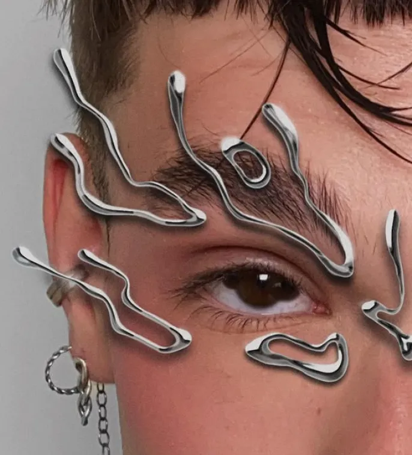
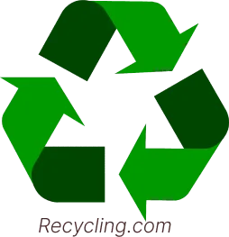

The future of make-up: When the virtual supplants the physical
Explore how augmented reality and virtual make-up are revolutionizing the beauty industry, offering an eco-friendly and interactive alternative to traditional cosmetics.
By Alice Frelin - Reading Time : 2min
Published on October 22, 2024 at 00:30

Id: 291279453 on Xiahongshu©
A technological revolution
In the near future, physical make-up could be relegated to the status of an archaic practice .
The advent of virtual make-up and augmented reality radically transforms our approach to beauty, potentially relegating traditional cosmetics to the status of historical curiosities.
Tubes of mascara, palettes of eyeshadow and lipsticks, once indispensable, may soon seem like as obsolete as 18th-century powdered wigs.
Make-up could soon look like this :
@wraaase sur Instagram©
Towards sustainable beauty
The technology of augmented reality now makes it possible to instantly change the way we look without applying any products to our skin, offering a creative freedom without precedent.
Why spend hours on make-up when a simple sweep of the screen can give you a flawless complexion in seconds?
Virtual make-up is part of a ecological approach, that respond to the sustainability issues that are of growing concern to consumers, such as the reduced packaging waste.
Technology for everyone
Interactivity offered by virtual make-up opens up new possibilities for personal expression. Users can experiment an infinite number of looks in real time, share their creations instantly on social networks, and even collaborate virtually with make-up artists from all over the world.
Inclusion is another revolutionary aspect of virtual make-up. It gives everyone, regardless of their skin type, allergies or make-up skills, access to an infinite od aesthetic possibilities.
However, this shift towards the virtual raises a number of questions:
This democratization of beauty could transform deeply our perception of aesthetic standards.
The future of virtual make-up also promises customization pushed to the extreme. Artificial intelligence could analyze our mood, our outfit, or even the event we're going to suggest the perfect virtual make-up.
This fusion of technology and beauty paves the way for a new era of self-expression. has no limits.
Augmented reality makeup tester :

However, this shift towards the virtual raises a number of questions
How can we preserve authenticity in a world where appearance can be changed at the click of a button? What impact will this virtualization of beauty have on our self-esteem and our relationship with our bodies?
As we head towards this beauty revolution, one thing's for sure: virtual make-up isn't just a trend but future of cosmetics industry redefining our concepts of beauty, creativity and self-expression.